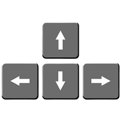

Јас сум Лука! Изработив магичен чип кој ме вовлече во светот на социјалните мрежи. Тука е многу страшно. Негатиците се насекаде. За да излезам од тука треба да ги исправам сите лажни вести, но јас не можам сам. Ми треба твојта помош!! Одговори точно на секое прашање избегнувајќи ги негативците и изнеси ме од тука. Ти си мојата последна надеж. ПОБРЗАЈ!!
Користиј ги стрелките на тастатурата
-> Логата на социјалните медиуми се негативци кои треба да се одбегнуваат. Доколку ги допреш ја губиш играта и се враќаш на почеток.
-> Доколку фатиш прашалник се појавува прашање кое треба да го решиш и само ако е точно добиваш 1000 поени
-> За да победиш мора да имаш 5000 поени т.е да ги одговориш сите прашања точно